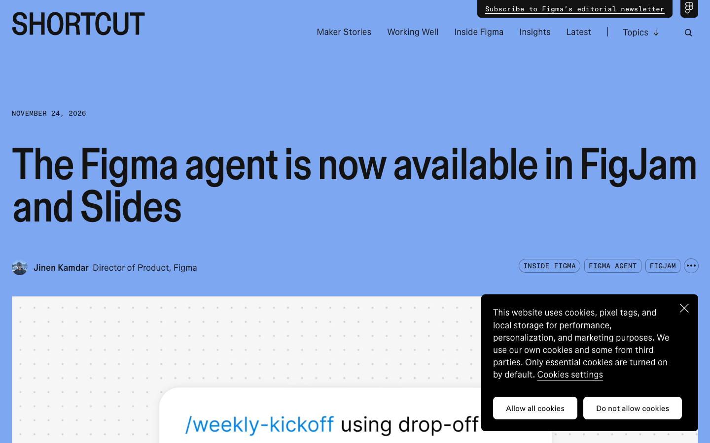
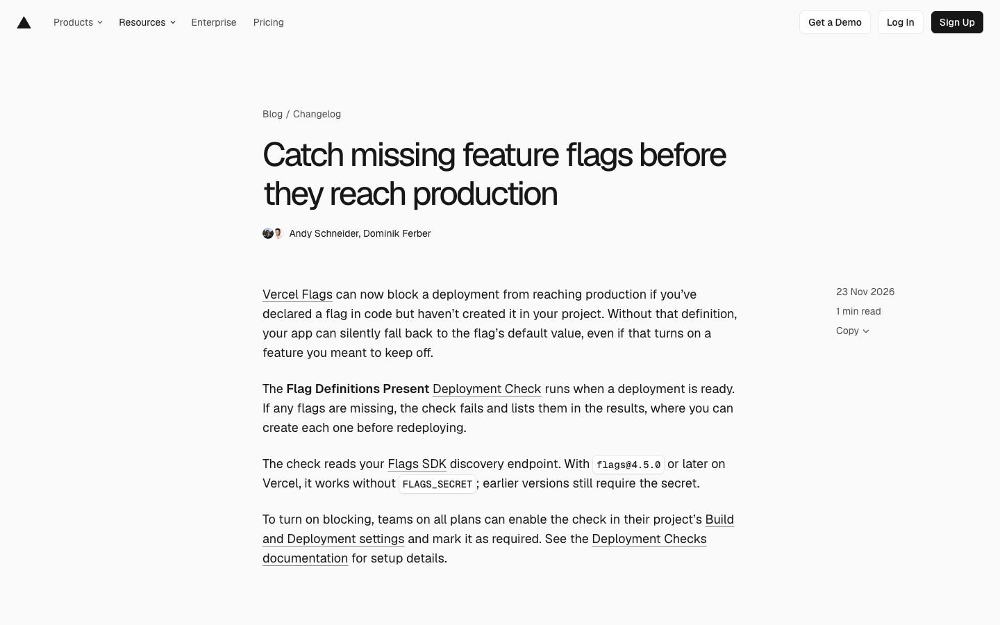
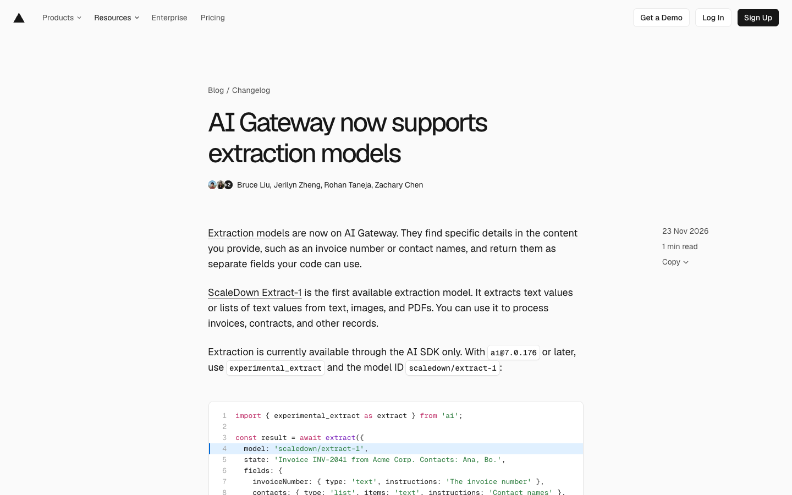
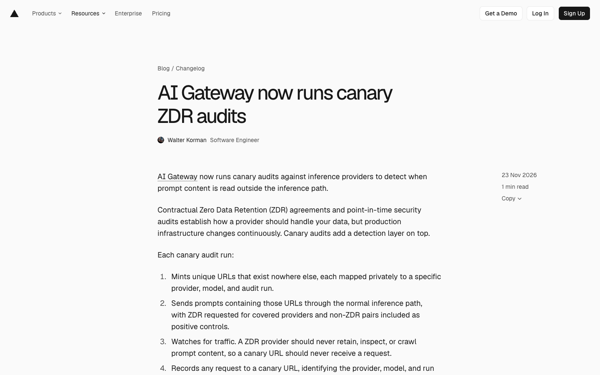
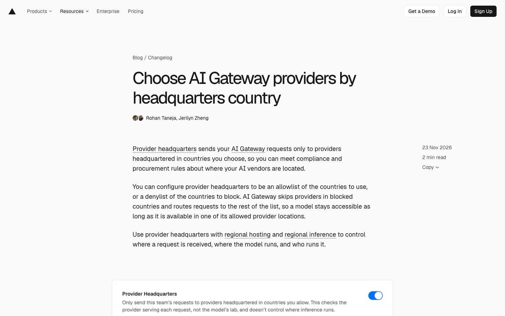
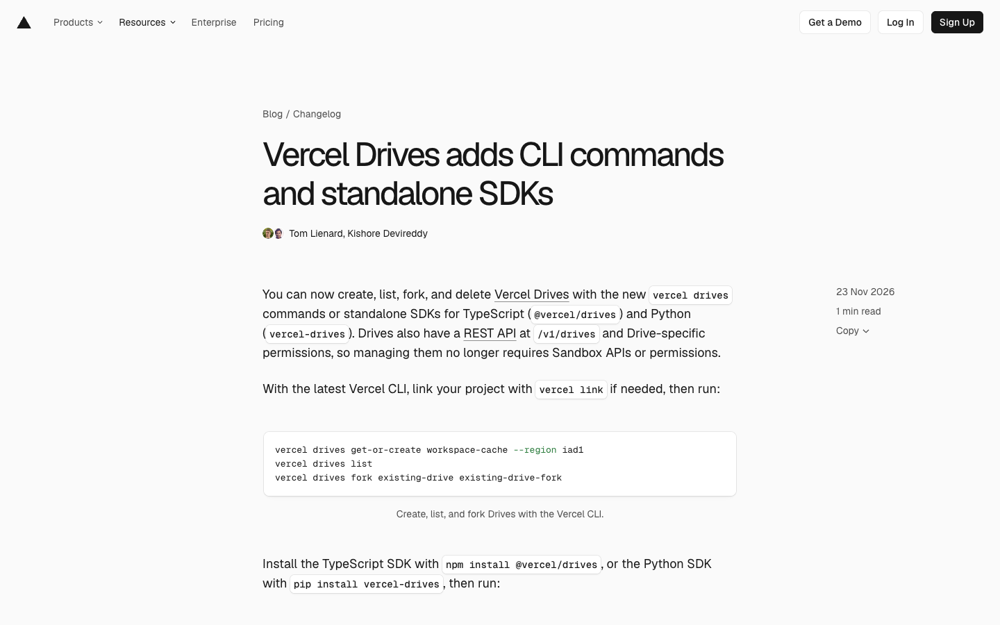
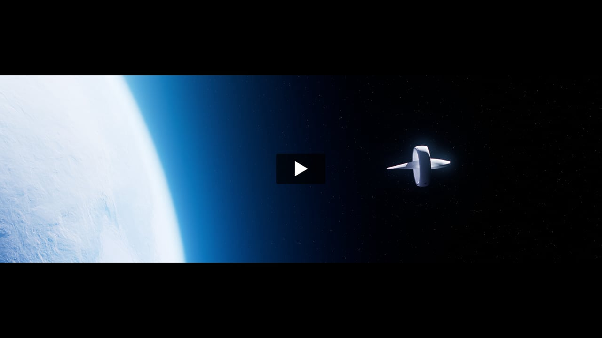

今天这批更新没有一个靠“更会聊天”取胜。Figma 把 agent 放进 FigJam 和 Slides，Vercel 同时补上结构化提取、ZDR 探针、供应商国别约束与发布门禁：入口继续变短，交付边界反而被写得更具体。
对设计团队最有用的变化，是代理开始接住真实上下文，而不是只接一句 prompt。会议板能被整理成 Spec，Spec 能继续长成 deck；PDF、图片和文本也能返回带置信度与字符位置的字段。可一旦这些结果要进生产，模板偏差、图表是否真连数据、缺失字段、默认 flag 和供应商路由都不能靠“看起来没问题”放过。
今天的判断很简单：把 AI 输出当草稿，把审计与门禁当产品能力。 速度已经不稀缺，能说明输入从哪来、结果为什么可信、失败时有没有安全退路，才是设计工程接下来真正的差异。
视频主卡也在说同一件事。ManvsMachine 没有拿 UI 截图堆金融功能，而是用一艘白色探索器、几何天体和极简银色标题，把“创造引擎”先做成一个可记住的世界；抽象主题只有在运动规则一致时，才不会沦为漂亮包装。

Figma 11 月 23 日把 agent 正式带进 FigJam 与 Slides，面向付费方案开放。FigJam 侧可以接附件和连接器，汇总研究、聚类便签，再把整块白板整理成带决策、开放问题和下一步的 Spec；Slides 侧能从 Spec、脚本或模板起步，先审大纲，再生成页面、拆分 slide 和补 speaker notes。消耗的 credits 会随任务复杂度变化。
这条链路终于把“会前散点—会后决策—对外讲述”接到了一起，但模板不是像素锁，官方也明确提醒要复核数值、比例、标签，生成的图表不一定与数据源联动；移动端暂不支持，FigJam 里设计 frame 内对象、矢量图、widget 和 embed 也有编辑限制。还没实测，先不下结论；第一轮应拿一块已经有人手结论的项目板做盲测，比较漏掉的反例和生成 deck 的事实漂移，而不是只看页面够不够漂亮。

Vercel 新增 Flag Definitions Present Deployment Check：代码里声明了 flag、项目里却没创建时，生产部署会被拦住并列出缺项，避免应用静默退回默认值，把本来要关闭的功能意外打开。它读取 Flags SDK 的 discovery endpoint，所有方案都能启用；旧版本仍要配置 FLAGS_SECRET，并在 Build and Deployment 设置里把检查标记为 required。
这是今天最小、也最容易立刻落地的一条。设计验收经常只看“开关开着时对不对”，真正危险的是缺配置时默认走哪边。把 flag 定义校验放进部署门禁后，至少能让“默认值”从代码暗角变成发布决策。

Vercel AI Gateway 开始支持 extraction model，首个是 ScaleDown Extract-1：文本、图片和 PDF 可以按 schema 返回 text 或 list 字段，缺失值是 null；文本结果带 0–1 置信度和字符 offsets，list 里的每一项也有独立 confidence。当前只在 AI SDK 提供，需要 ai@7.0.176 或更高版本，通过 experimental_extract 调用 scaledown/extract-1。
比“请把发票总结成 JSON”强的不是 JSON，而是来源位置和缺失语义终于能被程序检查。做设计资产入库、合同字段录入或研究材料归档时，低置信度字段可以进入人工复核，而不是被模型顺手补齐。官方更新页没给具体价格和失败是否收费，先拿一组人工标注 PDF 算字段级准确率，再谈自动化规模。

AI Gateway 现在会给每个供应商、模型和审计 run 生成唯一 URL，把它放进正常推理 prompt，再监测这个地址有没有被访问；ZDR 供应商不该保留、检查或抓取 prompt，因此任何访问都会留下可定位的证据。非 ZDR 组合同时充当正向对照，避免“探针本身坏了”被误判为合规。
这不是把合同和独立审计一笔勾掉，而是给持续变化的生产链路补一层活体检测。对使用真实用户研究、未公开产品图或合同材料的团队，ZDR 不该只是一枚采购标签；至少要能回答哪家供应商、哪个模型、哪一次 run 触发了异常。

AI Gateway 新增按供应商总部国家做 allowlist / denylist：Pro 与 Enterprise 可以设团队级规则，任何方案也能按请求指定；请求级配置只能收紧团队规则，不能放宽。总部信息未知的供应商不会收到请求，fallback model 也必须落在允许国家里，否则整次调用失败。
别把它误读成数据驻留。总部国家回答“供应商是谁”，regional hosting 与 regional inference 才回答请求在哪里接收、模型在哪里运行、数据在哪里处理。把三个维度拆开写进采购与设计评审，才不会用一个国别开关制造虚假的安全感。

Vercel Drives 现在可以用 vercel drives 创建、列出、fork 和删除，也有 TypeScript 的 @vercel/drives、Python 的 vercel-drives 与 /v1/drives REST API。权限改成 Drive 专属，不再借 Sandbox API 或 Sandbox 权限；Dashboard 与 Observability 也补了管理入口，Hobby、Pro、Enterprise 都能用。
对设计工程，这让“为每个 preview 分支复制一份可写数据”更像标准资源，而不是脚本旁门。还没实测，先盯 fork 的一致性、删除后的可恢复边界和额度；CLI 能建不等于团队已经知道哪些 drive 可以删。

视频：Vimeo 原片https://vimeo.com/1248682179｜制作：ManvsMachine｜时长：45 秒｜活动页：Robinhood Presentshttps://robinhood.com/us/en/campaign/presents/
这是 ManvsMachine 为 Robinhood 第三届 HOOD Summit ’26「Engines of Creation」做的 45 秒开场 title sequence。活动于 9 月 29–30 日在 Houston 举行，Robinhood 官方把它放在交易工具与产品发布的语境里；片子却没有从功能面板起手，而是造了一艘定制的白色探索器，让它穿过行星、光环、银色粒子和一道近乎冥想的空间门。
画面最有效的不是“太空很高级”，而是运动规则很克制：大体量天体慢，飞行器稳，粒子只在标题出现时聚拢；冷蓝、黑和金属银把品牌绿压到最低，给文字和轮廓留出呼吸。字体不抢镜，像导航坐标一样嵌进航行过程，最后才把活动名称变成目的地。Denis Kilty 的音乐与声音设计也服务于尺度，不靠密集鼓点催促镜头。
Vimeo player 直连在当前验证环境返回 HTTP 401，飞书因此不保留 iframe，按规则降级为 oEmbed 的 1280×720 带播放按钮静态图，同时保留 Stash 文章https://www.stashmedia.tv/manvsmachine-opens-hood-summit-26-for-robinhood/ 与 Vimeo 原片https://vimeo.com/1248682179。静态帧足够确认色彩、构图与航行语言，不拿它猜未能稳定播放的全部剪辑节奏。
可执行的下一步不是再做一艘飞船，而是先给产品发布片写一页“运动宪法”：主物体的速度、镜头允许的加速度、标题出现的触发、品牌色最多占多少画面。前端 hero 可以把其中一条规则压缩成 6–8 秒 WebGL / 预渲染循环，先保证首屏叙事和性能，再决定要不要做完整宇宙。
今日已覆盖：Figma agent 进入 FigJam 与 Slides、Vercel 缺失 feature flag 部署门禁、ScaleDown Extract-1、AI Gateway canary ZDR audits、供应商总部国家过滤、Vercel Drives CLI / SDK。
视频已覆盖：ManvsMachine × Robinhood「HOOD Summit ’26: Engines of Creation」，飞书预览记为 fallback=image，图片来自 Vimeo oEmbed，保留 Stash 与 Vimeo 链接。Stash 新登记《The Tower & the Witch》与 Hood Summit；Cloud9、The Divide 仅保留避免重复边界。除非出现价格权限变化、稳定 player、制作 breakdown 或实测证据，下一期不重复展开。